- 監督
- 荒木哲郎
- シリーズ構成/脚本
- 大河内一楼
- キャラクター原案
- 美樹本晴彦
- アニメーションキャラクターデザイン/
総作画監督
- 江原康之
- 音楽
- 澤野弘之
- 助監督
- 田中洋之
- 設定統括
- 笠岡淳平
- コンセプトアート/デザイン
- 森山洋
- デザインワークス
- 形部一平
- コンセプトボード
- 吉田史郎
- プロップデザイン
- 常木志伸
- 美術デザイン
- 谷内優穗
- 曽野由大
- 青木薫
- 総作画監督
- 丸藤広貴
- 浅野恭司
- アクションアニメーター
- 川野達朗
- 世良悠子
- チーフメイクアップアニメーター
- 松本幸子
- 美術監督
- 吉原俊一郎
- 色彩設計
- 橋本賢
- CGディレクター
- 藪田修平
- 撮影監督
- 山田和弘
- 編集
- 肥田文
- 音響監督
- 三間雅文
- 音響効果（サウンドボックス）
- 倉橋静男
- アニメーション制作
- WIT STUDIO
- 制作
- カバネリ製作委員会
- 生駒
- 畠中祐
- 無名
- 千本木彩花
- 菖蒲
- 内田真礼
- 来栖
- 増田俊樹
- 逞生
- 梶裕貴
- 鰍
- 沖佳苗
- 侑那
- 伊瀬茉莉地
- 巣刈
- 逢坂良太
- 吉備士
- 佐藤健輔
- 美馬
- 宮野真守
TOP